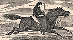

){kind=link}

| IN a little while all interest was
taken up in stretching our necks and watching for the
"pony-rider"--the fleet messenger who sped across the
continent from St. Joe to Sacramento, carrying letters
nineteen hundred miles in eight days! Think of that for
perishable horse and human flesh and blood to do! The
pony-rider was usually a little bit of a man, brimful of
spirit and endurance. No matter what time of the day or night
his watch came on, and no matter whether it was winter or
summer, raining, snowing, hailing, or sleeting, or whether
his "beat" was a level straight road or a crazy trail over
mountain crags and precipices, or whether it led through
peaceful regions or regions that swarmed with hostile
Indians, he must be always ready to leap into the saddle and
be off like the wind! There was no idling-time for a
pony-rider on duty. He rode fifty miles without stopping, by
daylight, moonlight, starlight, or through the blackness of
darkness--just as it happened. He rode a splendid horse that
was born for a racer and fed and lodged like a gentleman;
kept him at his utmost speed for ten miles, and then, as he
came crashing up to the station where stood two men holding
fast a fresh, impatient steed, the transfer of rider and
mail-bag was made in the twinkling of an eye, and away flew
the eager pair and were out of sight before the spectator
could get hardly the ghost of a look. Both rider and horse
went "flying light." The rider's dress was thin, and fitted
close; he wore a "round-about," and a skull-cap, and tucked
his pantaloons into his boot-tops like a race-rider. He
carried no arms--he carried nothing that was not absolutely
necessary, for even the postage on his literary freight was
worth five dollars a letter. He got but little
frivolous correspondence to carry--his bag had business
letters in it, mostly. His horse was stripped of all
unnecessary weight, too. He wore a little wafer of a
racing-saddle, and no visible blanket. He wore light shoes,
or none at all. The little flat mail-pockets strapped under
the rider's thighs would each hold about the bulk of a
child's primer. They held many and many an important business
chapter and newspaper letter, but these were written on paper
as airy and thin as gold-leaf, nearly, and thus bulk and
weight were economized. The stage-coach traveled about a
hundred to a hundred and twenty-five miles a day (twenty-four
hours), the pony-rider about two hundred and fifty. There
were about eighty pony-riders in the saddle all the time,
night and day, stretching in a long, scattering procession
from Missouri to California, forty flying eastward, and forty
toward the west, and among them making four hundred gallant
horses earn a stirring livelihood and see a deal of scenery
every single day in the year.  We had had a consuming desire, from the beginning, to see a pony-rider, but somehow or other all that passed us and all that met us managed to streak by in the night, and so we heard only a whiz and a hail, and the swift phantom of the desert was gone before we could get our heads out of the windows. But now we were expecting one along every moment, and would see him in broad daylight. Presently the driver exclaims: "HERE HE COMES!" Every neck is stretched further, and every eye strained wider. Away across the endless dead level of the prairie a black speck appears against the sky, and it is plain that it moves. Well, I should think so! In a second or two it becomes a horse and rider, rising and falling, rising and falling--sweeping toward us nearer and nearer--growing more and more distinct, more and more sharply defined--nearer and still nearer, and the flutter of the hoofs comes faintly to the ear--another instant a whoop and a hurrah from our upper deck, a wave of the rider's hand, but no reply, and man and horse burst past our excited faces, and go winging away like a belated fragment of a storm! So sudden is it all, and so like a flash of unreal fancy, that but for the flake of white foam left quivering and perishing on a mail-sack after the vision had flashed by and disappeared, we might have doubted whether we had seen any actual horse and man at all, maybe. |